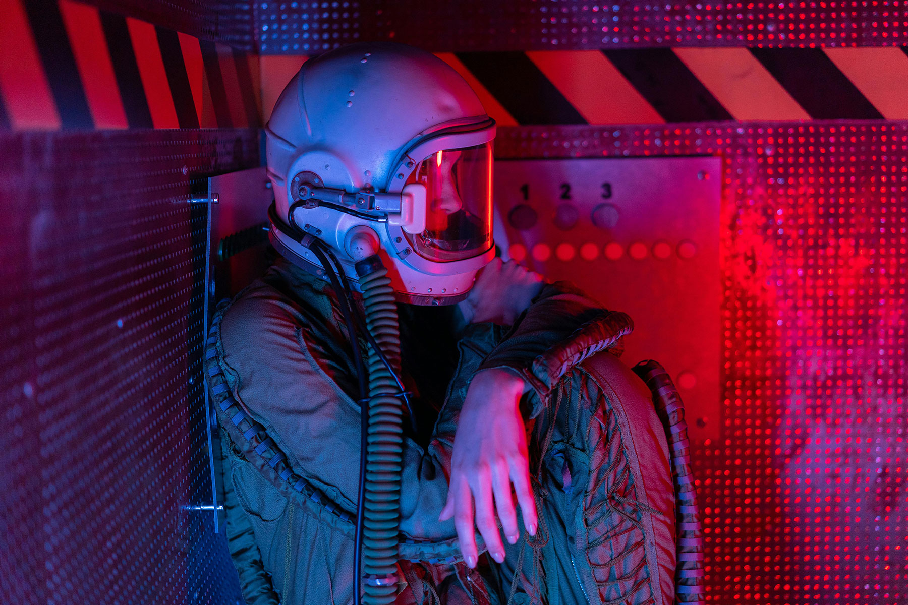
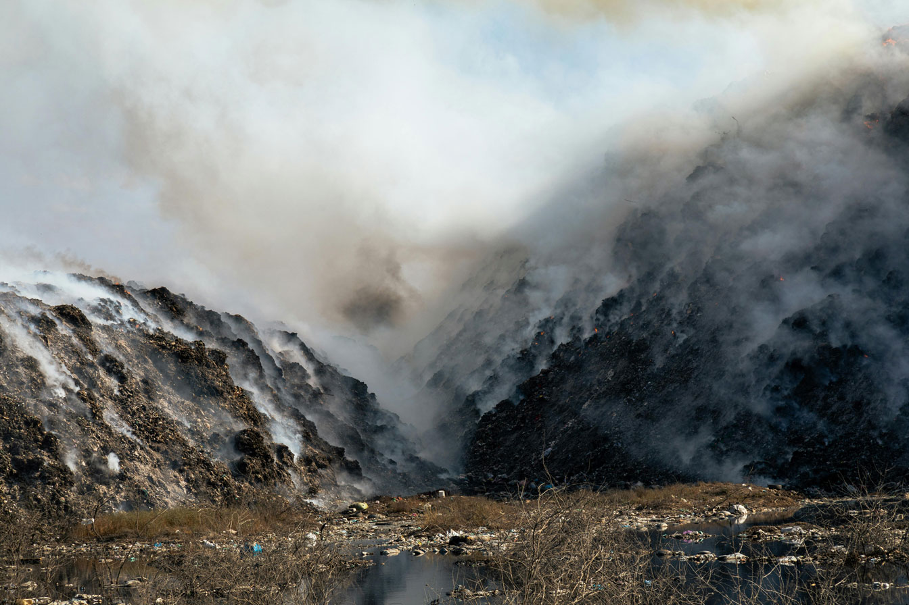

Before Terraforming
Prior to terraforming, the conditions on Acheron were very harsh. It had no indigenous ecosystems and couldn't support human life. The surface was volcanic, with a cold and toxic atmosphere of mainly nitrogen and CO₂.
"We'd better get back 'cause it'll be dark soon and they mostly come at night."Rebecca "Newt" Jorden
Prior to terraforming, the conditions on Acheron were very harsh. It had no indigenous ecosystems and couldn't support human life. The surface was volcanic, with a cold and toxic atmosphere of mainly nitrogen and CO₂.
The atmosphere became more breathable, but it remained a dim, desolate environment with harsh winds. A terraforming colony known as Hadley's Hope made Acheron livable for a brief time. However, following the colony's destruction, terraforming halted and no humans have settled here for hundreds of years.
Acheron's crust is composed of aluminium silicates. Although there are signs of past volcanic activity, there is no evidence of any current volcanic or tectonic processes on the surface. However, the moon's core still remains active.
Terraforming is the process of changing the climate and ecology of a planet or moon to support life in Earth-like conditions. The process can take up to 20 years. The Weyland Corporation was one of the first corporations to achieve this.